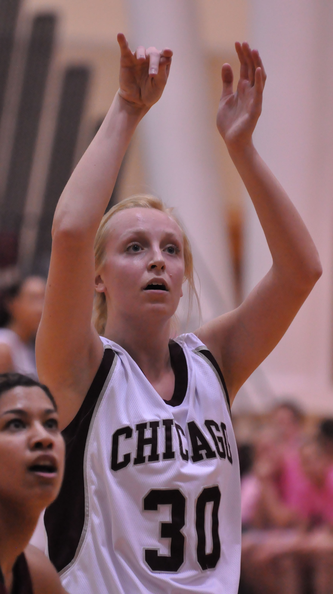
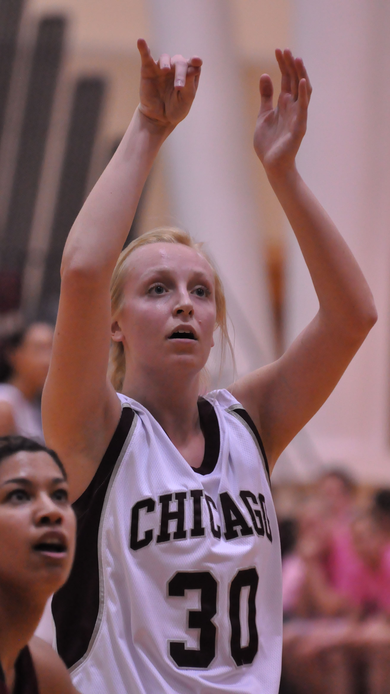
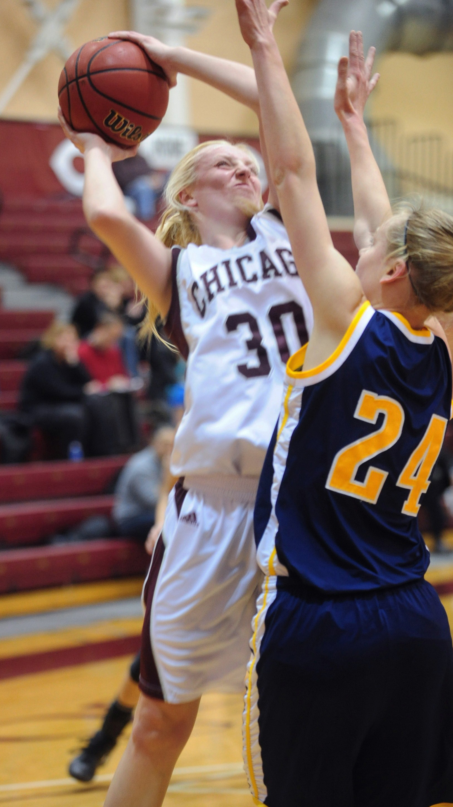
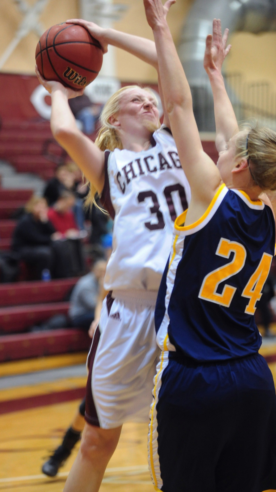
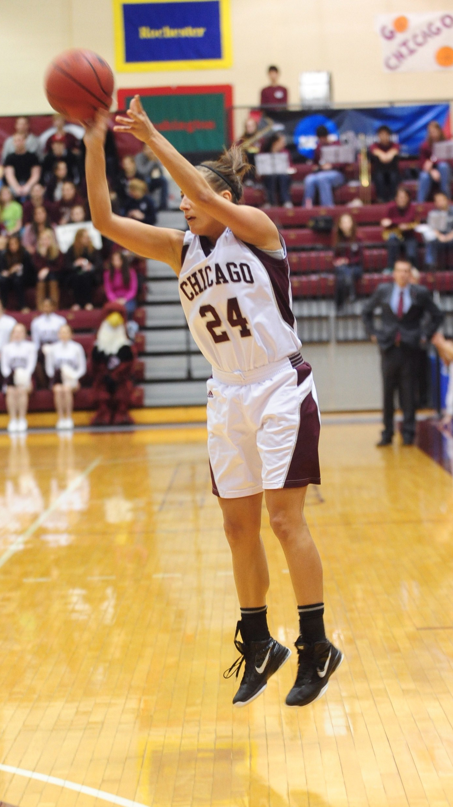
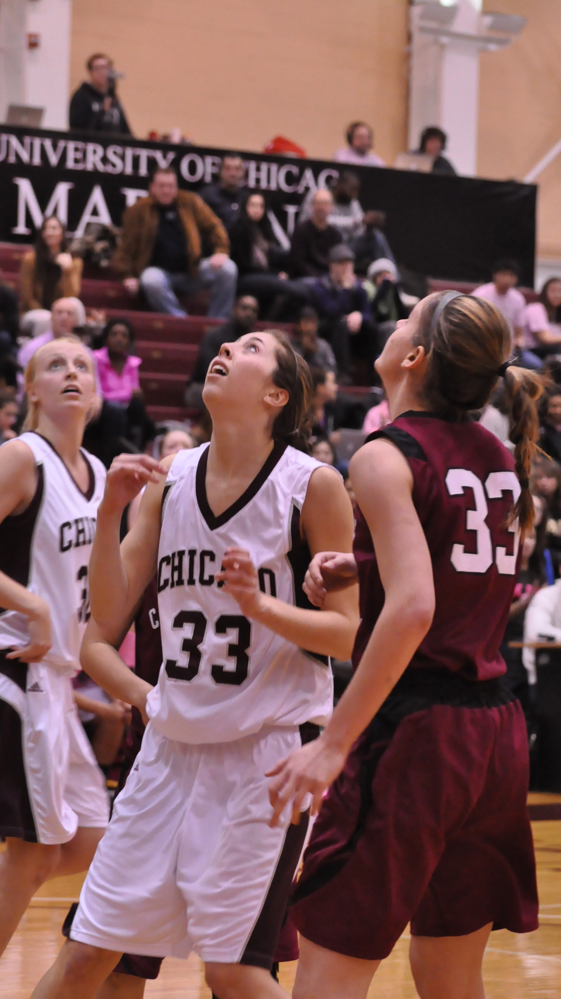
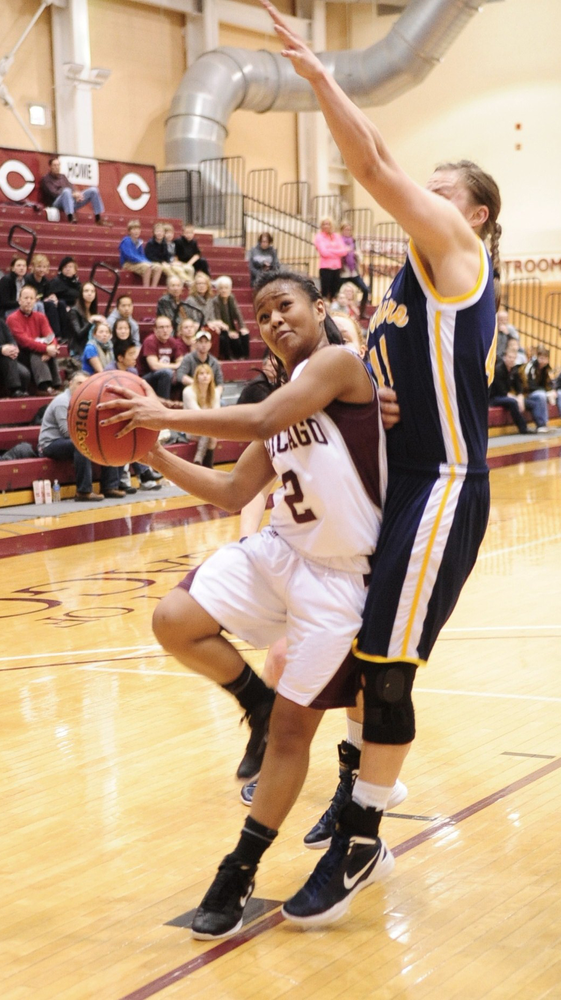
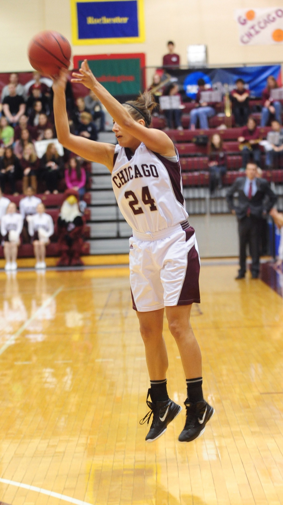
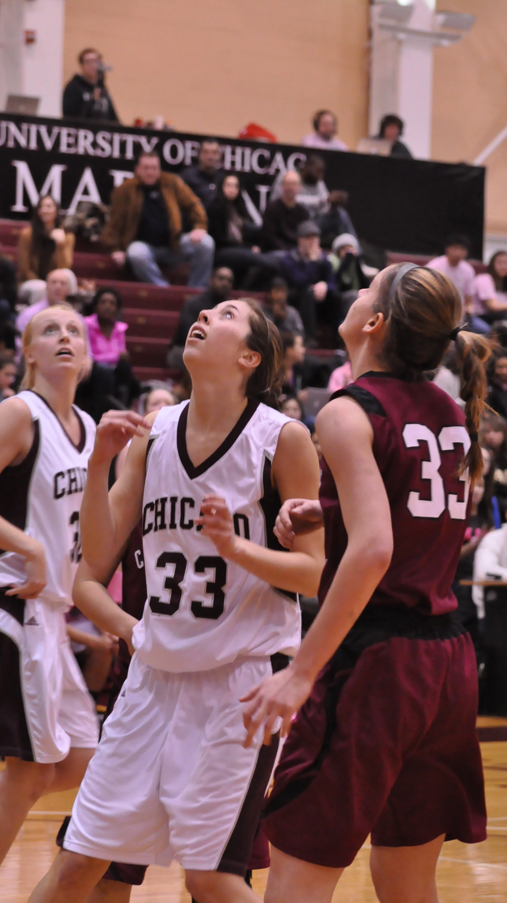
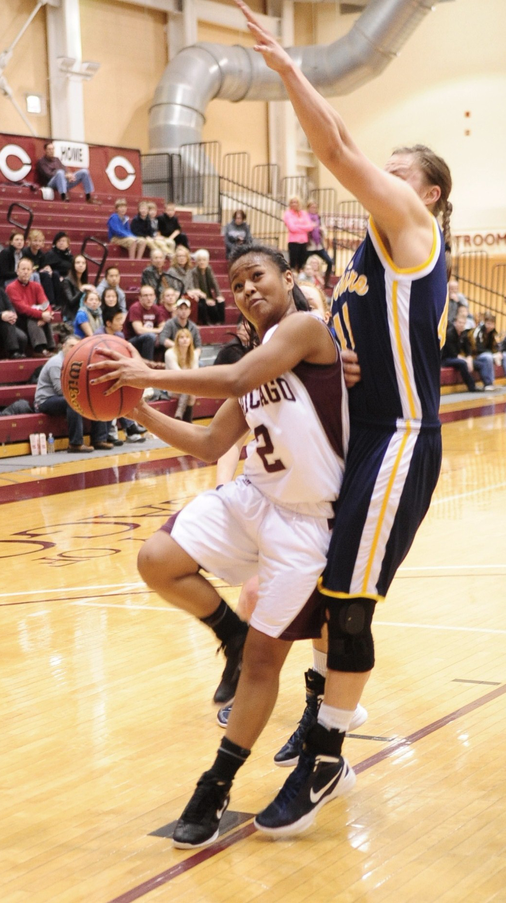

27-1.
Do you remember?
Did you believe?
From November 2011 through March 2012 the Ratner Athletics Center was transformed. The architects behind the construction were 16 Maroon student-athletes and four coaches.
The 2011–2012 Chicago Maroons, led by head coach Aaron Roussell and a group of five seniors, won the UAA and reached the Sweet 16 of the NCAA DIII tournament before losing to Calvin in the sectional semifinal tilt.
“I still can’t figure out how they lost,” Mahmoud Bahrani (A.B. ’12) said. Bahrani was this section’s beat reporter for the team as a fourth-year and knew, like many others on campus, how much potential the team had.
The Maroons completed a perfect 25–0 regular season, and went 27–0 including the first two rounds of tournament play.
“To win every game in a season is ridiculous. It’s just so hard to do, and I don’t think any of us understood the impact,” Roussell said. “I think we took a moment after number 25, after the Wash U game, to just say ‘oh my god, guys, we haven’t talked about this all year, but you just finished a season 25 and 0.’”
That was four years ago, when this year’s fourth-years were bright-eyed first-years, just learning their way around Ratner.
This year, for the first time since 2011-12, the Maroons again saw their names next to the title “UAA Champions.” They shared this year’s conference title with Wash U. The fourth-years, along with head coach Carissa Sain Knoche and the entire coaching staff, anchored a team that finished atop the UAA for the first time since those players’ first year.
At that time, current head coach Sain Knoche was an assistant to head coach Roussell. He spent eight years with the program, departing to be the head coach at Bucknell following the 2011-12 season.
Competition against Wash U is frequently the measuring stick for Chicago teams, so perhaps it’s best to begin the look back in St. Louis.
A lot changed for the Maroons between their first meeting with the Bears – on January 7, 2012 – and their final matchup, on February 25. The first game, on the Bears’ turf, was the South Siders’ 11th of the season. They entered the game 10–0, having not yet played a conference game. The Bears were 10–1 at that point, also boasting a clean UAA slate.
The Bears gave the Maroons a fight, but Chicago won the game 65–62.
More than a month later, the Bears had played well, but the Maroons had played better. Chicago started the day with an unblemished record both in and out of the conference (24–0, 13–0), while the Bears had surrendered four games all season, at 20–4 overall and 11–2 in the UAA.
The Maroons won that second game more handily, taking it by a final score of 76–67. And with that, the perfect season and second-straight UAA title was complete. The Maroons had won the UAA in 2010-11, with a perfect 14–0 conference record as well.
Beating the Bears always makes the headlines in Hyde Park. If there’s been a women’s basketball dynasty in the UAA, there’s no question it’s been Wash U. They’ve won 21 UAA Championships, including ten straight from 1998 through 2007.
But in the last 10 years, they’ve had a frequent rival, and equal, in the Maroons.
Over that time span, only one team other than Wash U or Chicago has won the UAA title (Emory in 2012-13). The Maroons have grabbed four of the remaining nine titles, while the Bears have six – if the math sounds funky, remember that they shared the title this year.
But the 2011-12 season belonged to the Maroons alone.
They averaged 73 points per game in their 25 regular-season games, with an average margin of victory of more than 19 points.
The South Siders won all but five of those games by double digits, and scored less than 61 points only once.
They started strong, and continued strong. They scored 93 points in their season opener against Fontbonne University on November 18, 2011, en route to the first of 27 wins to come that season.
Their fewest points surrendered came on December 14 at Olivet. The Maroons held the Comets to just 36 points.
On February 10, 2012 against Carnegie Mellon, they scored a season-high 95 points and gave up just 46. That game’s 49-point margin of victory was also the most prodigious of the campaign.
“The atmosphere was alive,” Meghan Herrick, AB ’12 said. “People screaming, cheering, and clapping. They pushed us through the lulls and helped us close out games. They are an underappreciated element of the game that helped us win a majority of the games that season.”
Herrick led the team with 89 assists. She was second on the squad with 114 rebounds. And she took more free throws than anyone else on the team – by a long shot. She made exactly 100 frees on the season.
These Maroons seniors owned the stats pages. Taylor Simpson AB ’12, and Meghan’s sister Morgan AB ’12, were both in the top 10 in points per game in the UAA. Simpson was third in the conference in rebounding.
Simpson and Morgan Herrick were second and third in field goal percentage.
Morgan was UAA Player of the Year for 2011-12. Simpson and Morgan Herrick were All-Americans.
Oh, and Simpson was the DIII Women’s Basketball Player of the Year.
But the numbers and accolades don’t even begin to tell the story of this team.
Any group, with the right combination of talent, can put up good numbers. What the Maroons did had an extra element, something more.
The players will tell say it wasn’t just the talent and ability that helped them go far that season.
“It was the intangible that made it all come together – it was a unique feeling that I never felt on any of my previous teams,” Meghan Herrick said. “You have to be good athletes, good basketball players, have good basketball IQ, [and] be in shape. All of that, but what drove us to be so successful was this ‘intangible.’ We understood one another and our tendencies. We knew where we all needed to be and when. We knew how to pump up one another and bring us up when we were in a rut. We knew that we needed to fill whatever role was needed of us that game to win – whether it was locking down an opponent, scoring 20 points, setting up one of our teammates – it didn’t matter.”
“We did whatever we needed to win.”
The other seniors felt that, too.
“Our team just had an incredible chemistry those two years that I've never felt on a team before,” Simpson said. “We all really trusted each other and were very in sync.”
Not a bad setting, talent or otherwise, for an introduction to college basketball for that year’s freshmen.
“I remember drawing comparisons between the senior class this year and my class, even when they were first-years,” Simpson said. “They came in and were able to make an impact even as freshmen on a really successful team, and that's pretty special.”
Roussell and his staff saw the comparison between the 2011-12 seniors and the eventual 2014-15 seniors, too.
“We were very fortunate to have a special group of seniors that year,” Roussell said. “But we thought that freshman group would be very capable of doing similar things, and have definitely done so.”
“People don’t realize just how much that freshman class helped us that year. There was a time when Morgan Donovan played more minutes at the point guard than anybody else,” he said. “There was a time that Hannah Ballard, before her injury, was going to be just as good, if not better, than every other player we had there.”
“I think we all knew that was going to be a special class.”
The comparisons don’t end there. Even though this year’s Maroons didn’t quite make it to the NCAA Tourney, their success this year still correlates with what they witnessed – and took part in – three years prior.
Where Simpson and Morgan Herrick were in the top 10 in UAA ppg three years ago, Claire Devaney was sixth in the conference this year. Her line of 12.7 ppg this season was the exact same as Simpson’s three years prior – sixth in the UAA for Devaney, and sixth in the UAA for Simpson in 2011-12.
As for Simpson’s notch of second in the UAA in field goal percentage at 56.4, Devaney, too, finished second in the UAA there this year, with a 52.4 percentage.
The similarities don’t end there. In 2011-12, Joann Torres was fourth in the UAA with a 40.6 3-pt field goal percentage. This year? First-year Elizabeth Nye finished fourth in the UAA with a 37.3 mark.
Perhaps this is a sign of another reign of the first-year/fourth-year pattern.
If you weren’t on campus in 2011-12, then you might not remember just how much the team captivated its surroundings.
These athletes acknowledged that the campus culture progressed over the course of their tenure there.
“I cannot tell you how many times I would tell people I played on the women’s basketball team at the University of Chicago, and others would respond, “Really? I didn’t know they had a team,’” Meghan Herrick said. “I think the campus has come a long way over the course of my years at U of C. More students began to attend games, show more enthusiastic participation, and even throw parties in celebration of the team’s success. It felt more like a ‘community’ event rather than just a team event.”
Bryanne Halfhill AB ’12 (now Johnson) echoed a similar sentiment.
“I did notice that over the course of the four years, students and fans became more and more interested in us,” she said. “My junior and senior year, we had fans from the nearby elementary schools attend games and make signs and also students got together with their houses to make the women's games an event for their house for the week.”
This isn’t to call the student body fair-weather fans, but is rather a testament to the 2011-12 Maroons’ power: to bring passion and caring to a group that hadn’t necessarily displayed it beforehand.
Roussell added another detail to that welcoming environment: the administration.
“I have to credit the administration and other coaches that we had and are still there,” he said. “I think it is a very, very supportive administration, I felt very fortunate to have them as allies for us and for our student-athletes…I still look back at that, and you couldn’t ask for a better group of coaches and administrators than I got to experience during those eight years.”
“It was a great time to be a Maroon,” Morgan Herrick said.
 


 

 




